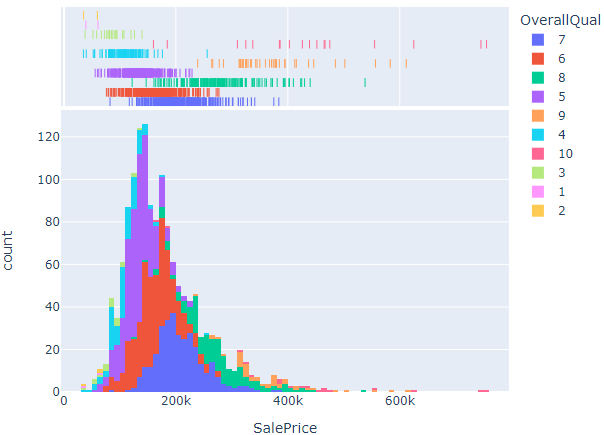
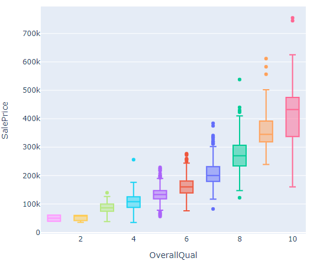

Cleaning the dataset
For the data cleaning I handled Null values, removed outliers, applied different fill methods and formatted datatypes.
Exploring the dataset
I did a exploratory data analysis, with the goal being to understand the data better. Image 1 & 2 show some of my visualizations.
Image 1: SalePrice distribution with quality colour
Image 2: Boxplot of the overall quality
Feature Selection
In order to find the best features for the machine learning model. I made a Pearson's R heatmap matrix. From this heatmap I selected the highest scoring features. See image 3 for the heatmap.

Image 3: Pearson's correlation heatmap
Modelling
I applied three regression machine learning models in combination with the heatmap features. The three models where a linear regression, random forest and extreme gradient boosting model. Each models performance was measured using root mean squared error (RSME)
Results
To achieve these scores I applied, one-hot encoding, hyperparamater tuning and k-fold cross validation techniques.